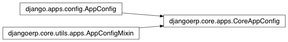

apps¶

-
class
djangoerp.core.apps.CoreAppConfig(*args, **kwargs)[código fonte]¶ Bases:
djangoerp.core.utils.apps.AppConfigMixin,django.apps.config.AppConfigConfigure app dependencies.
-
check_dependencies()¶
-
check_models_ready()¶ Raises an exception if models haven’t been imported yet.
-
create(entry)¶ Factory that creates an app config from an entry in INSTALLED_APPS.
-
dependencies= [u'django.contrib.auth', u'django.contrib.contenttypes', u'django.contrib.sessions', u'django.contrib.sites', u'django.contrib.messages', u'django.contrib.staticfiles', u'django.contrib.redirects', u'formtools']¶
-
get_model(model_name)¶ Returns the model with the given case-insensitive model_name.
Raises LookupError if no model exists with this name.
-
get_models(include_auto_created=False, include_deferred=False, include_swapped=False)¶ Returns an iterable of models.
By default, the following models aren’t included:
- auto-created models for many-to-many relations without an explicit intermediate table,
- models created to satisfy deferred attribute queries,
- models that have been swapped out.
Set the corresponding keyword argument to True to include such models. Keyword arguments aren’t documented; they’re a private API.
-
import_models(all_models)¶
-
name= u'djangoerp.core'¶
-
ready()¶
-
signals= None¶
-
urls= None¶
-